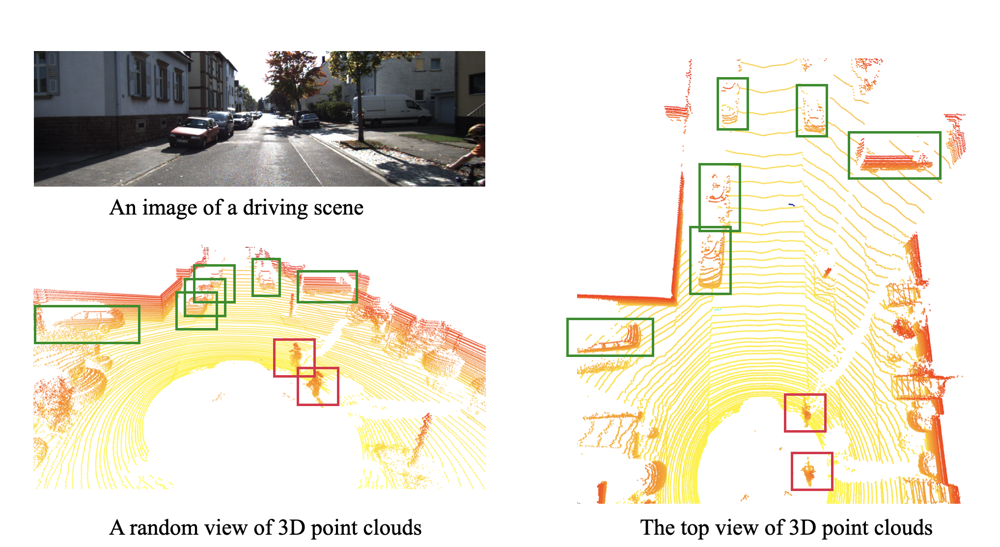
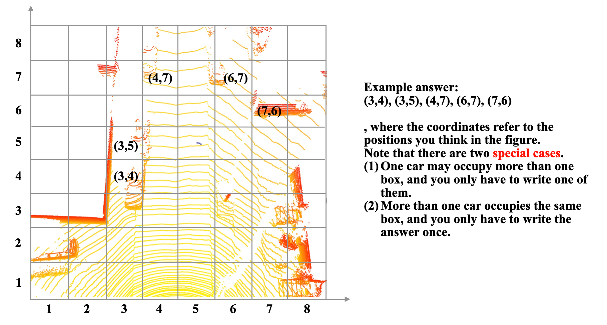

Survey task: find cars
Dear users,
Here is a subjective evaluation survey about autonomous driving. Traditional autonomous driving systems use cameras to capture 2D images to detect objects like cars and persons. A novel device, LIDAR, is similar to a camera, but they receive 3D point clouds instead of 2D images to better capture spatial information. For comparison, we present an example (example 1) between an image and point clouds under the same scene. Although 3D point clouds can not be understood easily like images to the naked eye, we can still see the cars, trees, bicycle drivers, and other objects in the point clouds. We only provide the top view of these 3D point clouds in the survey for simplicity. Although the background introduction sounds a bit technical, your task here is easy-to-do and intuitive, finding the car/cars in the following figures (top views of 3D point cloud). To make the task easier, We devided each figure into 8X8 boxes and your task is to write down the coordinateds of found cars. (see example 2 for details)
Your answers might help machines better understand cars and contribute much to the research community and We highly appreciate your time and contribution to our project!
Example 1: The cars in point clouds are bounded with green boxes and bycicles are bounded with red boxes.

Example 2: An example answer is shown in the below figure.

Now let's find the car/cars in the belowing 10 figures. Each question corresponds to the question in the survey link.
Q1:

Q2:

Q3:

Q4:

Q5:

Q6:

Q7:

Q8:

Q9:

Q10: